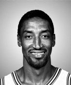

Scottie PIPPEN
Scotty Maurice Pippen Sr. (born September 25, 1965), usually spelled Scottie Pippen, is an American former professional basketball player. He played 17 seasons in the National Basketball Association (NBA), winning six NBA championships with the Chicago Bulls. Pippen, along with Michael Jordan, played an important role in transforming the Bulls into a championship team and in popularizing the NBA around the world during the 1990s. Considered one of the greatest small forwards of all time, Pippen was named to the NBA All-Defensive First Team eight consecutive times and the All-NBA First Team three times. He was a seven-time NBA All-Star and was the NBA All-Star Game MVP in 1994. He was named one of the 50 Greatest Players in NBA History during the 1996–97 season, and is one of four players to have his jersey retired by the Chicago Bulls (the others being Jerry Sloan, Bob Love, and Jordan). He played a main role on both the 1992 Chicago Bulls Championship team and the 1996 Chicago Bulls Championship team, which were selected as two of the Top 10 Teams in NBA History. His biography on the Naismith Basketball Hall of Fame's website states that "the multidimensional Pippen ran the court like a point guard, attacked the boards like a power forward, and swished the nets like a shooting guard". During his 17-year career, he played 12 seasons with the Bulls, one with the Houston Rockets and four with the Portland Trail Blazers, making the postseason 16 straight times. Pippen is the only NBA player to have won an NBA title and Olympic gold medal in the same year twice, having done so in both 1992 and 1996. He was a part of the 1992 U.S. Olympic "Dream Team" which beat its opponents by an average of 44 points. He was also a key figure in the 1996 Olympic team, alongside former "Dream Team" members Karl Malone, John Stockton, Charles Barkley, and David Robinson, as well as newer faces such as Shaquille O'Neal, Anfernee "Penny" Hardaway and Grant Hill. He wore the number 8 during both years. Pippen is a two-time inductee into the Naismith Memorial Basketball Hall of Fame, once for his individual career and once as a member of the "Dream Team", having been simultaneously inducted for both on August 13, 2010. The Bulls retired his number 33 on December 8, 2005. The University of Central Arkansas retired his number 33 on January 21, 2010.